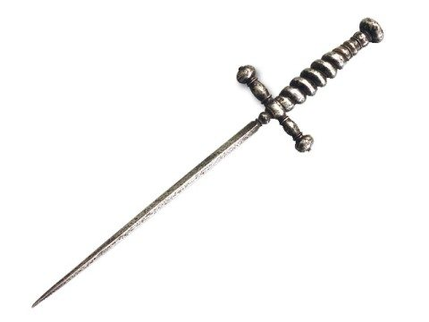

Периоду Средневековья присуща бесконечная вереница жестоких кровопролитных сражений и рыцарских турниров.
Основным оружием этого времени было холодное — для ближнего боя, изготовленное из металлов, имеющее разнообразные формы. Холодное оружие по характеру своего воздействия делится на рубящее, колющее, колюще — рубящее и ударное.
Колющее оружие получило наибольшее распространение среди видов боевой экипировки. Принцип его действия заключался в нанесении ударов на маленькую площадь с большим давлением. За счет минимальной площади соприкосновения, вся сила удара приходилась практически в одну точку, пробивалась даже самая надежная защита и наносились глубокие проникающие колотые раны. Колющее оружие могло быть древковым или клинковым в зависимости от своего строения.
Клинковое колющее оружие
 Из — за своей универсальности клинковое оружие было самым распространенным. Появились тяжелые доспехи, которые полностью закрывали тело противника. Чтобы иметь возможность найти в них щель и нанести урон, клинковое оружие все больше сужалось и утончалось. Существует множество разновидностей: шпага, рапира, кортик, стилет и другие.
Шпага — разновидность меча, длиной около метра, изначально выполняющая колюще — рубящую функцию оружия, но постепенно утратившая лезвие и ставшая облегченной формой вооружения придворных вельмож, символом благородства и чести.
Рапира представляет собой очень острый и тонкий меч с достаточно длинным клинком и имеющим сложную форму эфесом, предназначенным для абсолютной защиты удерживающей меч руки.
Кортик — символ морского офицерского чина, имеет обоюдоострый прямой клинок и прямую рукоять с шаровидной головкой.
Стилет — итальянский кинжал, имеющий тонкий и узкий клинок и простую прямую крестовину. Будучи очень эффективным оружием для защиты или коварного нападения, стилеты имели огромную популярность даже среди придворных дам, поскольку его было легко спрятать в складках платья.
Древковое колющее оружие
Самыми распространенными представителями древкового оружия являются копье и пика. Копья различались по назначению – от легких метательных, более тяжелых кавалерийских, до тяжелых пехотных, предназначенных для защиты строя от конных атак. Пика – легкое, но очень длинное (до 5 метров) копье для кавалерии.